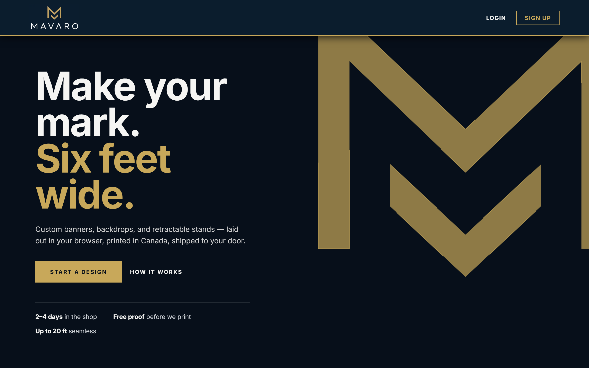

Est. 2026 — Winnipeg, MB — File No. 001
Full‑stack developer, deliberately on the record.
I work mostly on backend systems, data pipelines, and AI integration, then build the APIs and interfaces on top of them. Right now that's a live e-commerce platform for Mavaro Studios; before that, an AI-graded examination platform shipped in 8 weeks against a 16‑week estimate.
01 / Dossier
The summary,
unabridged.
Full-stack developer with a focus on backend systems, data pipelines, and AI integration. Led development of a production examination platform, delivering it in 8 weeks against a 16-week estimate. Comfortable working across the stack — from parsing and structuring raw data to building the APIs and UI that serve it.
- Based in
- Winnipeg, Manitoba
- Studying
- Full Stack Web Development, Red River College Polytechnic
- Focused on
- Backend logic, AI-assisted pipelines, structured data
- Currently
- Open to co-op / junior developer roles
02 / Fieldwork
Selected case files.

Custom banner & vinyl printing platform
An e-commerce platform for custom banners, decals, and retractable stands. Customers lay their design out directly in the browser, get a free proof, and have it printed and shipped from a Canadian shop. I designed and built the whole thing, front to back.
- Frontend: Next.js storefront and in-browser design editor, rendering live proofs for prints up to 20 feet wide.
- Backend: PHP backend handling order processing, proof generation, and the print production pipeline.
- Database: MariaDB schema for orders, saved designs, and shipment tracking.
English examination platform
A full-stack examination platform that uses AI models to automatically grade reading and listening comprehension responses. Took it from scope to production in 8 weeks, against a 16-week estimate.
- AI integration: automated grading of open-ended reading & listening responses.
- Data pipeline: structured and cleaned datasets of ethical/societal discussion topics for consistent, repeatable AI output.
- Backend logic: handled asynchronous AI API calls, application state, and response validation before anything reached the frontend.
Music organizing & relational data app
A full-stack web app for cataloguing and searching a music collection, built around a relational MySQL schema with REST APIs for filtering and search.
- Database design: relational MySQL schema to catalog and search a music collection.
- API design: REST APIs to filter and serve data to the frontend.
- Frontend: user flow, wireframes, and reusable UI components designed from scratch.
03 / Record
Education & experience.
Full Stack Web Development
Red River College Polytechnic — Exchange District Campus
Currently enrolled. Coursework: Advanced JavaScript, API Design, SQL & Database Management, Cloud Basics, Systems Analysis, Agile Software Development.
Software Developer
ACE Project Space
Built and shipped a production AI-assisted examination platform in 8 weeks, against a 16-week estimate.
Academic & Collaborative Projects
Team-based coursework
Worked in Agile sprints designing, building, and iterating on full-stack features. Reviewed teammates' code and wrote schemas, user stories, and acceptance criteria.
Customer Service & Seasonal Roles
Various Employers
Communicated clearly under time pressure, picked up new tools and processes quickly, and built a consistent record of reliability across every role.
Grade 12 Completion
Murdoch MacKay Collegiate
04 / Contact
End of file.
Let's talk.
Open to co-op placements and junior developer roles.